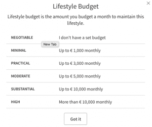

Kyle is an entrepreneur and nomad who has been living abroad since 2016. He blogs at This Is Trouble. Follow him on Facebook.


As dating becomes more and more difficult in the West, men are turning to new methods to meet women. One of the biggest kept “secrets” these days is the utilization of sites traditionally reserved for gold-diggers girls in need of financial aid.
It’s become referred to as “sugar dating”, or “splenda dating”. In a nutshell, you pay the big bucks to join these sugar dating sites, where women traditionally are looking for men with a net worth of over a million dollars. Then, you exaggerate your status to get responses and dates.
Finally, when you get them on a date, it’s as simple as this: trick them before you get tricked. These are not honorable or traditional women, and so this is not a game for the faint-hearted. If you’re willing to take these risk, then this guide is for you.
By far the biggest sugar dating website is Seeking Arrangement. And truthfully, it’s the only one I’ve personally experienced with. I’ve had such success with it, I never found a reason to stray away from it.
There are plenty of other websites that out there, so do your due diligence before you pony up the money to join them.
With sugar dating websites, the fees are very high–Seeking Arrangement will cost you $70 for just a one month membership. Compare this to something like Tinder Plus, which you can get an entire year of for less than that.
Why pay that price? Because the quality on these websites is out-of-this world.
If you have any doubts about that, make a profile and browse for yourself (you can do this for free, just not message the girls).
The current prices for Seeking Arrangement are:
Sure, you can save money with a site like Seeking Arrangement by paying for more time up front–but can you actually get enough use out of a site like that for six months?
If you’re any good at online dating, probably not. The number of girls to message simply won’t be high enough to entertain you for six months. Instead, it’s far better to completely blitz the site for one month, take three months off, and then sign up for another month. As a result, over a year long period you’d only end up paying $210 instead of a full $600.
And you’d probably get the same results.
The best thing to do is to sign up, and blitz the site hard for a couple of weeks. Then take a week off. Finally, during the last week of your membership being active, go hard again. You can potentially get several dozen leads, which you can then try to meet up with over the course of the next month.
While they’ll never admit it, many premium dating sites that cost money have a little trick to get you to sign up, or come back.
Have you ever noticed that when you first register your account on a site, you get dozens of messages–yet, you can’t read or reply to them? Ever notice that when your membership expires that you get another flood of messages in the week after your account has been downgraded from a premium membership?
Simply put, they’re dangling a carrot in front of your eyes in the hopes that you’ll sign back up (many of those messages come from fake profiles).
Don’t fall for it. Have discipline. When your time on a sugar dating site is up, shut it down for a while until the real population of girls has been replenished.
(As sugar dating gets more and more mainstream and popular, the amount of time for this is going to decrease.)
Sugar dating sites have very similar profile criteria to traditional dating websites, but with one exception.
They’re going to ask for things like your annual income, net worth, and “lifestyle budget”–i.e. how much money you’re willing to spend on these girls.

So the question becomes… how much do you lie?
Truthfully, you need enough of a cover story to give her plausible deniability about it. I was only 24 when I started utilizing sugar dating, and I found that I could get away with saying that I had a net worth of a million bucks, and made around $300k a year. This was backed up by the apartment I had (5 minutes to the beach in Los Angeles), the job and company I worked for, as well as the way I dressed.
The reality is that neither my net worth or my income were nowhere near this, but I gave enough of the illusion that it didn’t stop girls from meeting with me.
I was a big proponent of making it clear to girls that I wasn’t going to be forking over any money for them to spend time with me. I made the argument that having a successful guy who they could have a lifestyle with was worth the trade off of getting a monthly allowance (which is what most sugar daddies pay their babies).
Because I wanted to screen girls I went out with hard, I added this tidbit in my profile for them to clearly see:
I’m not looking to pay an allowance. I’m not old like most guys on SA. I’m more than happy to share my lifestyle with and whatnot but I wouldn’t buy a car without test driving.
So, I’ll let you decide if getting to spend time and do cool shit with me, who is about your age, is worth the trade off. Also consider I don’t care if you have someone who DOES do that for you as long as you are present with me. The end.
My profile basically subconsciously portrays this: I’m not paying you anything, and I expect sex before things get serious. I’m young, cool, and charming. You’ll get perks of the “sugar dating” life but with someone you don’t have to be ashamed about.
Now, you could call me a cuck for adding that last bit in–but you must realize that these girls are ruthless. I didn’t want to lose girls who would be down for sex with me–but truly needed the cash. Would you ever consider being in an LTR with a girl you found on a site like this? Probably not.
Most men on these sites are paying women simply for their time, not their vaginas. So no, I really didn’t care if a girl I was dating off the site had an older gentlemen who paid her $500 a week to have dinner with him.
Here is where you must keep a key game lesson in mind: when you are already high value, you do not need to overgame!
Remember that these girls think you are a millionaire. They expect you to be busy, aggressive, and to not waste time. Millionaires don’t have time to waste playing endless text games with girls.
Something as simple as, “Hey, your profile intrigued me. If the interest is mutual send me a message back with your number and ask me anything you’d like to know about me.”
This message consistently got me a 50% response rate with their number. Some of them needed another message or two to give it out.
Confident, straight to the point, and best of all–cuts through all the bullshit. If she’s interested, you’ve got a new lead and potential date and bang. If she’s not interested, she’s simply not going to respond. An often-overlooked aspect of game is just filtering through all the white noise. This messages completely filters girls into the yes or no category.
Once you’ve got her number, keep on the same path.
There is no need to spike attraction or do anything too much over text. Banter for a bit and ask her out. Keep it simple. “Let’s meet for a quick drink for an hour and see if we click.”
Your perceived status plus your “normalness” (most men on this site are old and weird, remember) will result in her not being able to say YES fast enough.
Here’s where it gets tricky, but as long as you’ve set the frame up appropriately from the start (the disclaimer in your profile, and not mentioning money over text), you should be good.
Simply treat it as a normal date and escalate as per usual. Don’t take her to a fancy restaurant or let her order food–drinks in a classy lounge are enough. You should expect to pay for those drinks.
Under no circumstances should you pay her actual money. I don’t think there needs to be any discussion about that. Sugar dating is really just legal prostitution. These girls will hamster it to themselves, but you needn’t do that too.
If it gets to a point where she is really pressuring you for money, or is giving off strong gold digger vibes–simply walk away. When you’re experienced with game and have a high abundance mentality from being on a site like that, it’s easy to walk away.
There are plenty more fish in the sea.
I heard so many stories from girls.
There was the one who was paid $3,000 a month to go out to dinner once a week and hold hands with a guy.
There was the other who was paid $500 an “outing”, which mostly consisted of riding around town in his Ferrari–until he crashed it.
There are so many girls on these sites, but not enough men with game to satisfy them. Sure, these girls are looking for money, but deep down they’re all rooted in the same biologically. They will respond to game and charm. If you give them this, there is no telling the possibilities that they will go to keep you around.
You certainly shouldn’t go wife hunting on Seeking Arrangement, but who doesn’t like a little (free) sugar from time to time?
Read More: How To Write An Online Dating Profile That Gets You Laid